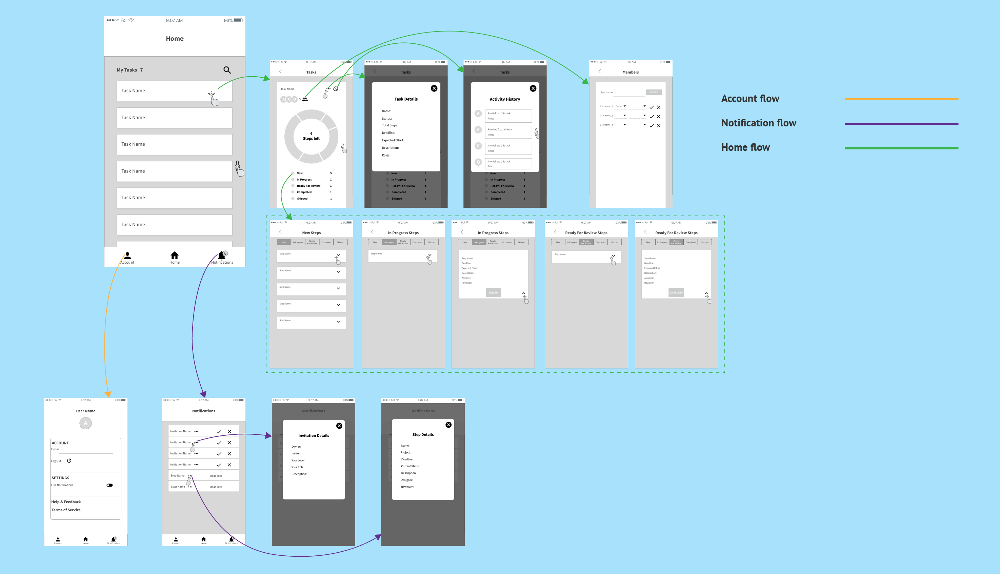
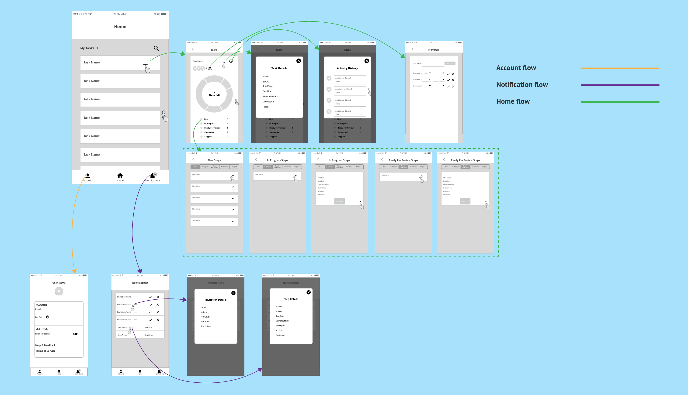
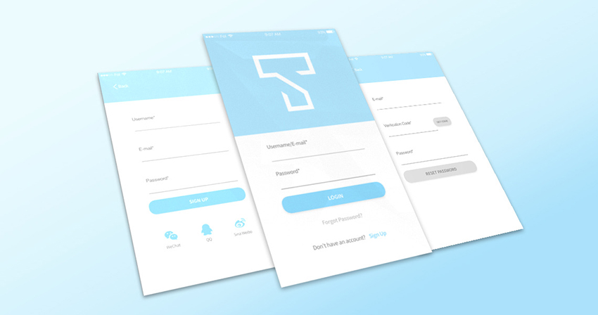

Taskit Mobile App
Cross-platform task management mobile app design for iOS and Android. With it, the user can easily view and manage the workflow and progress of their tasks.
Background
Taskit, a Bay Area-based startup, builds a web-based task management application that helps people to optimally manage the workflow as well as the progress of tasks. As the company's business grows fast, they realize that a cross-platform mobile version of the application can bring their business to the next level. In the summer of 2018, the founder of Taskit reached out to me and asked to help them design the UX and UI of the Taskit mobile app.
My Role
UX & UI Design
Duration
5 Weeks
Testimonial
“Qian is a passionate designer with an insightful and solid understanding of UX design. Communications with her were easy and fun! She is able to convert our needs into high quality designs. Her great professional skills and solid design knowledge will prove to be a great asset to any team!”
Sherry Zhou. Founder at Taskit.
Design Process
Discover & Define
Before getting started with the design, I had a kick-off meeting with the client. According to their product walkthrough, the goal of Taskit has been set as bringing simple and efficient digital experience for the user to manage tasks. Its existing web-based product focuses on the following three functionalities:
{kind=link}
{kind=link}
{kind=link}
As mobile devices have become a popular way for people to browse the web information anytime anywhere, the company realizes that mobile app, which focuses on visualizing the progress of tasks as well quickly managing workflows, can build a new customer market as well as bring their business to the next level.
The Challenge
The client wants to create efficient experience for their users by building a cross-platform mobile application that makes it simple for users to view and manage the progress of tasks in a timely manner.
The Goal of Mobile App
Design a mobile app experience that makes it simple for the user to quickly view the progress of tasks as well as manage the workflows for efficient coordination purpose.
Solutions
With regard to the client's needs, I came up with the design solution that includes the following three information & data visualization features:
The Kanban technique is introduced to enable the user to quickly view the workflow of tasks.
The segmented donut chart which displays the proportions of steps with different status enables the user to quickly view the progress of a task.
The activity history is utilized to allow the user to keep track of updates from other collaborators.
Wireflows
In the first round wireframing, after the login flow, the following bottom navigation bar that includes three destinations was used for navigating this mobile app.
 

{kind=link}
After showing the first version of wireframing to my client, they provided the feedback as follows:
What The Client Like
- The Login + Sign Up flow is simple. Also, it provides login options via popular social media accounts.
- The Notification flow not only informs the user about task collaboration invitation but also serves a warning about the due dates.
- The data visualization design with segmented donut chart effectively communicates the progress of tasks.
- The Kanban technique makes it simple to quickly view the workflow of tasks.
What Need To Be Improved
- Despite the bottom navigation bar makes the app's navigation in a neat and clean manner, a more simple alternative need to be used due to the company's current app development budget constraints.
- Task steps managing needs to be prioritized.
- Task steps managing with the Kanban technique needs to be simplified with less back-and-forth taps.
- The screen space use to be optimized.
With the client feedback on first version of wireframes, I iterated the wireframing with the following major changes:
- The bottom navigation bar was removed to save the client's app development budget.
- The "Account" and "Notification" flow were located on the homepage.
- The number of steps left for each task were displayed on the homepage, which allows the user to grasp a quick view of task progress.
{kind=link}
- The task steps managing flow has been prioritized.
- The progress of the task with the donut chart flow was incorporated into the task steps managing flow.
- The task details and the donut chart were displayed at the same page.
{kind=link}
In the design review meeting, the client was satisfied with these major changes that I made in the 2nd version of iteration. Specifically, they really like the new Home flow design which is more straightforward and intuitive than the 1st version. Nonetheless, the client still pointed out two problems as follows:
Problems
- The bubbles with numbers which display the number of steps left for each task might possibly mislead the user to click them.
- The non-selected radio button doesn't clearly communicate its interactive function.
- The categories of task steps management tab bar can be reorganized to optimize the space.
{kind=link}
Solutions
- Remove bubbles with numbers from the homepage; Add the number of steps to each category on the task steps management tab bar, which quickly indicates the progress.
- Replace the non-selected radio buttons with filled label buttons clearly indicate the interactive action.
- Reorganize the task steps into three major categories. which makes the user's finger can easily interact with each tab.
{kind=link}
Final Design
In addition to follow the iOS Human Interface Guideline as well as Material Design for Android, the minimalist approach was utilized to create the whole high-fidelity UI. Specifically, all screens have generous amount of white space which marks out the core functional elements of the app. A monochromatic color scheme based on the light sky blue theme color of the web-based product is used. Meanwhile, to maintain the consistency between the web-based product and the mobile app, the same set of colors that indicate task steps with the different status is used. Also, a set of simple and recognizable filled icons are used to represent the functionality as well as content.
- UI for iOS
- UI for Android
Reflection
Impact
- Designed an efficient experience for the Taskit mobile app by incorporating effective visual tools such as Kanban technique, segmented donut chart and activity history tracking.
- Simplified the navigation as well as optimized the user flow by reducing the number of screens and clicks.
What I Learned
- Iterations brought my client feedback to ensure that the wireframing meets their needs.
- Documentation of different iterations makes me give the client better visibility of the evolution of the design as well as the progress at each iteration.
Connect With Me
LinkedIn Dribble Twitter